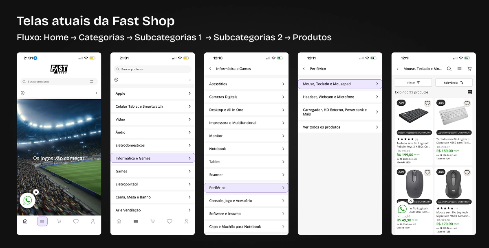
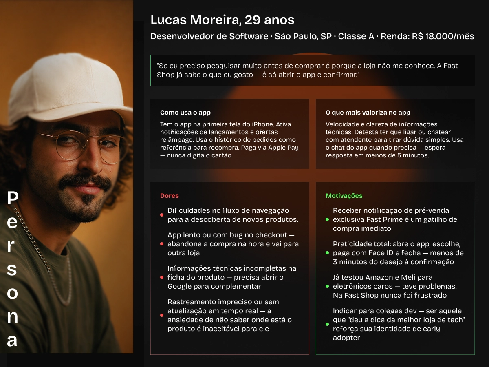
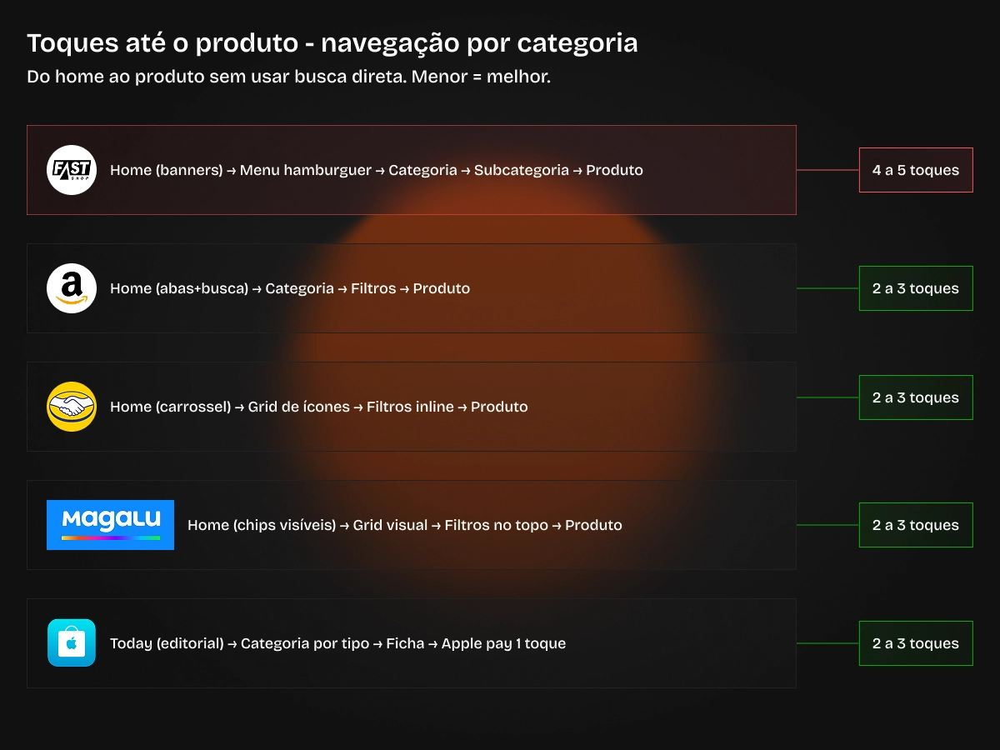
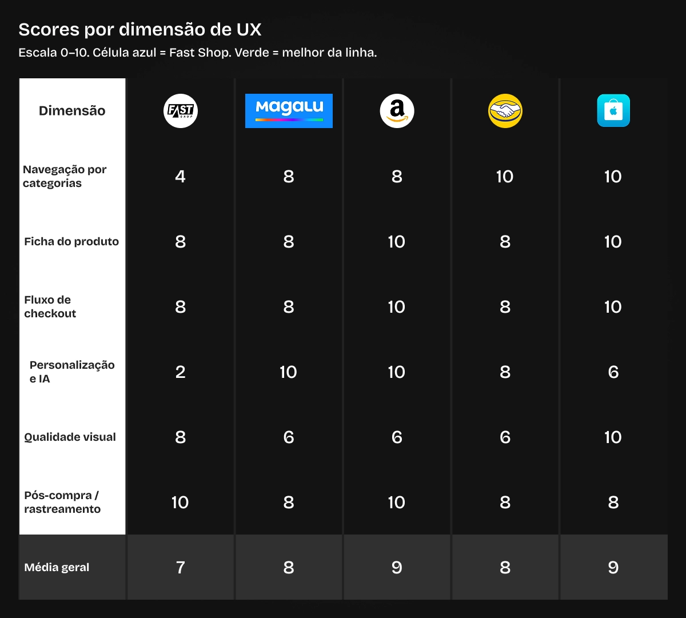
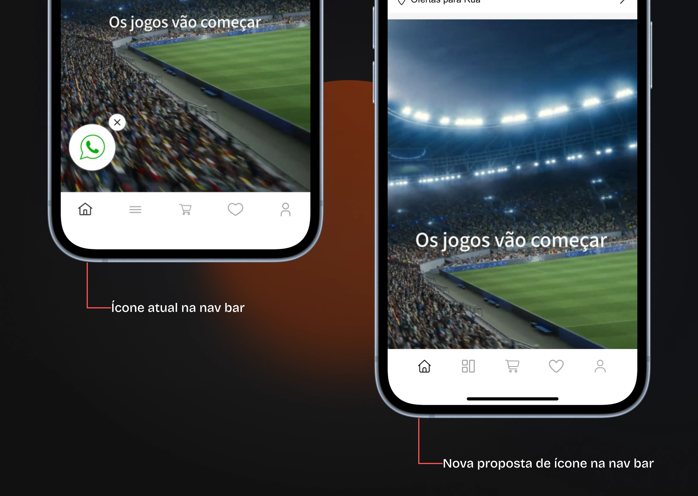
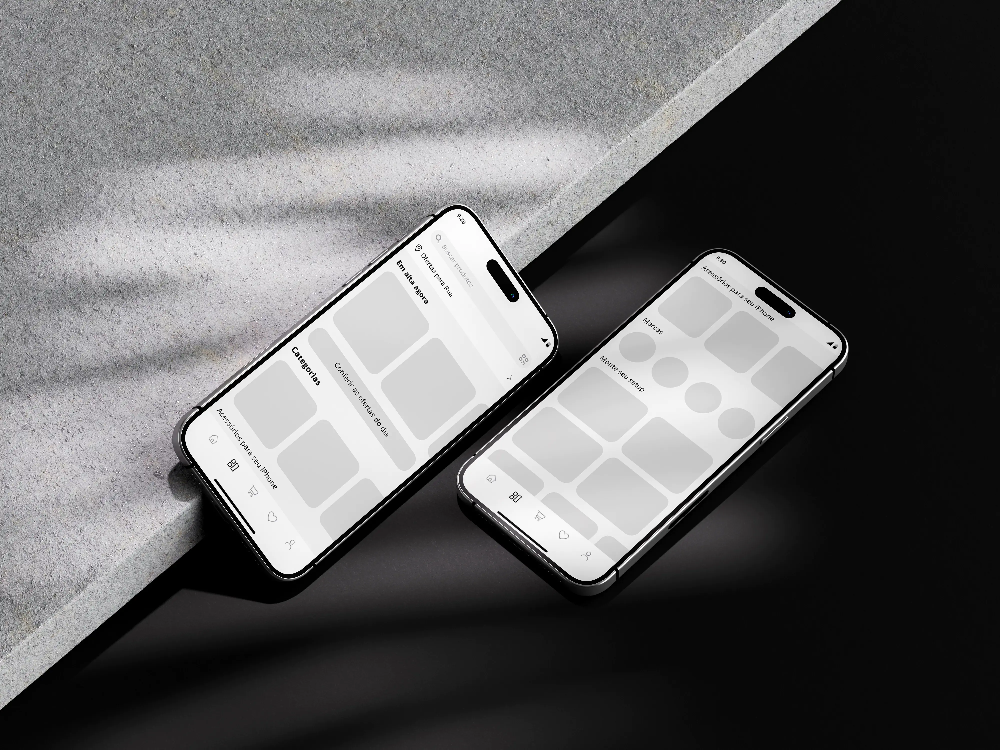
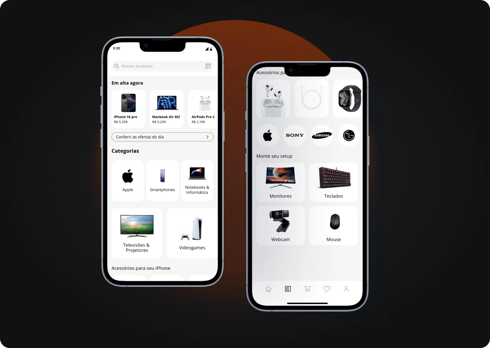
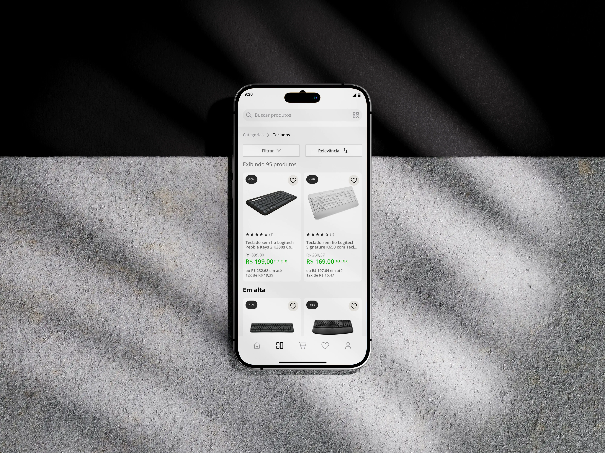

O app mais bem avaliado do varejo brasileiro de eletrônicos e uma navegação exploratória quebrada num produto tecnicamente sólido.
A Fast Shop é o app nacional mais próximo da Apple Store em estética e experiência — nota 4.8 na App Store, Apple Pay nativo, qualidade visual impecável. E escondia uma contradição direta: a tab de categorias era uma lista textual plana.
Sem ícones, sem imagens, sem hierarquia. O usuário precisava ler item por item e percorrer até 4 níveis de subcategorias antes de ver qualquer produto. Num app que compete por posicionamento premium, isso é invisível — até você parar para medir.

O perfil do usuário Fast Shop é o de um comprador de tecnologia com alta intenção de compra e baixa tolerância a fricção. Ativa notificações de lançamento, paga via Apple Pay, e abandona o app se a informação não aparecer rápido o suficiente.

O estudo foi estruturado para não partir de uma solução — mas de diagnóstico. Cada fase alimentou a próxima: a jornada atual revelou onde medir, a heurística revelou o que estava quebrado, o benchmarking revelou o quanto estava atrasado, e a síntese revelou onde agir primeiro.
O dado mais direto do estudo: todos os concorrentes chegam ao produto em 2–3 toques. Apple Store com o "Today" editorial, Magalu com chips horizontais visíveis no home, Mercado Livre com grid visual de ícones. Nenhum concorrente brasileiro combina os três — essa é a janela de oportunidade.


Os achados se organizam em três camadas que se alimentam — e precisam ser resolvidas nessa ordem.
O redesign não parte do zero. A base estética e funcional já é sólida — qualidade visual, ficha técnica e clareza de navegação funcionam. O trabalho foi remover o que bloqueia a descoberta e adicionar o que cria desejo, sem destruir o que já diferencia.




Cada métrica está rastreada a um critério heurístico específico e a uma decisão de design concreta — não são estimativas genéricas, são consequências diretas das mudanças propostas.
O achado mais importante não foi um problema de interface — foi aprender a olhar além do que parece resolvido. A nota 4.8 e a qualidade visual do app criam uma camada de confiança que pode mascarar problemas estruturais sérios. O trabalho de um designer de produto é questionar exatamente esse tipo de ilusão.
A redefinição de escopo na Fase 1 — de search para navegação exploratória — foi a decisão mais importante do projeto. Sem ela, o estudo teria respondido uma pergunta menos relevante.